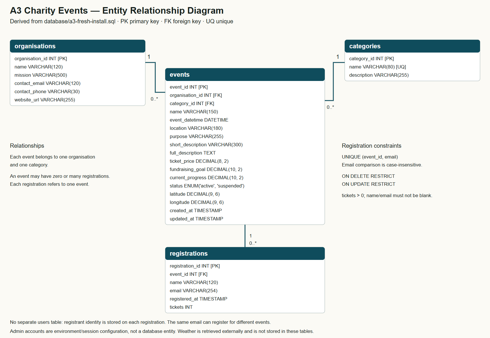

2026-10-17 · 本地审阅材料。本轮未上传 GitHub / cPanel，未覆盖已完善的报告。
| 老师反馈 | A3 核实结果与处理 |
|---|---|
| GitHub link is broken | A3 认证访问 200、匿名访问 404，仓库确为 Private。当前连接账号有 push 权限、无管理权限。按用户说明，老师要求提交后邀请；尚未知老师账号，保留私有，届时由所有者 zjsjsjjdjs 邀请并确认老师接受。A2 当时提交链接未提供，不能断言 A2 也是同一原因。 |
| Header、Nav、Body、Footer 拆分及复用 | 公众端 app.html 定义一次 header/nav/main/router-outlet/footer；后台 app.ts 同样定义一次共享框架。路由只替换主内容，各自应用的公共区域复用。页面 Body 对应 main 中的内容，不应在每个 Angular 组件中添加 body。服务端独立登录页由 page() 函数统一生成。未重做外观，新增结构说明注释。 |
| 缺少 autodoc 风格注释 | 17 个核心源文件新增 JSDoc 风格职责、参数、返回值和异常说明：事务、CRUD、状态更新、登录会话、Angular 托管、HTTP 服务、天气及表单校验。自动文档工具提取 49 个文档块（含原有块）。并非宣称每个私有成员均有完整注释。 |
| 报告缺少 ERD | 按实际 a3-fresh-install.sql 生成四表 ERD，提供 PNG、SVG、Mermaid。尚未修改或核验用户最终报告，应由用户检查后插入报告。 |
这是实际运行的动态网站：浏览器运行 Angular，经 Express API 访问 MariaDB。网站用于操作演示，GitHub 用于查看源码和提交记录，两种地址应分别提供。不要交 localhost、127.0.0.1 或带 :2083/cpsess 的控制台地址作为网站地址。
本次只读检查：首页 200；/api/health 200；未登录访问 /admin/ 跳转登录页。之前完整业务流程由用户逐项确认，本次没有修改线上数据。原始说明要求双方分别部署到各自 SCU cPanel，另一位同学站点应由其本人确认。

organisations → events、categories → events、events → registrations 均为 1 对多，每个父记录可有零个子记录。每个活动必须属于一个组织和类别，每条报名必须属于一个活动。registrations 的 (event_id,email) 联合唯一约束限制同一邮箱对同一活动仅报名一次，邮箱比较不区分大小写；ON DELETE RESTRICT 阻止删除已有报名的活动；tickets 必须大于 0。不存在单独 users 或 weather 数据表。
node scripts/generate-code-reference.cjs 可重新生成。依据：A3 原始说明第 7 页要求保护仓库不让其他学生查看，并允许邀请评分老师；第 2 页要求双方各自部署到 SCU cPanel。新增要求要求报告反映 Angular 和 AI 使用。本文件是技术核对材料，不是最终报告或最终提交。